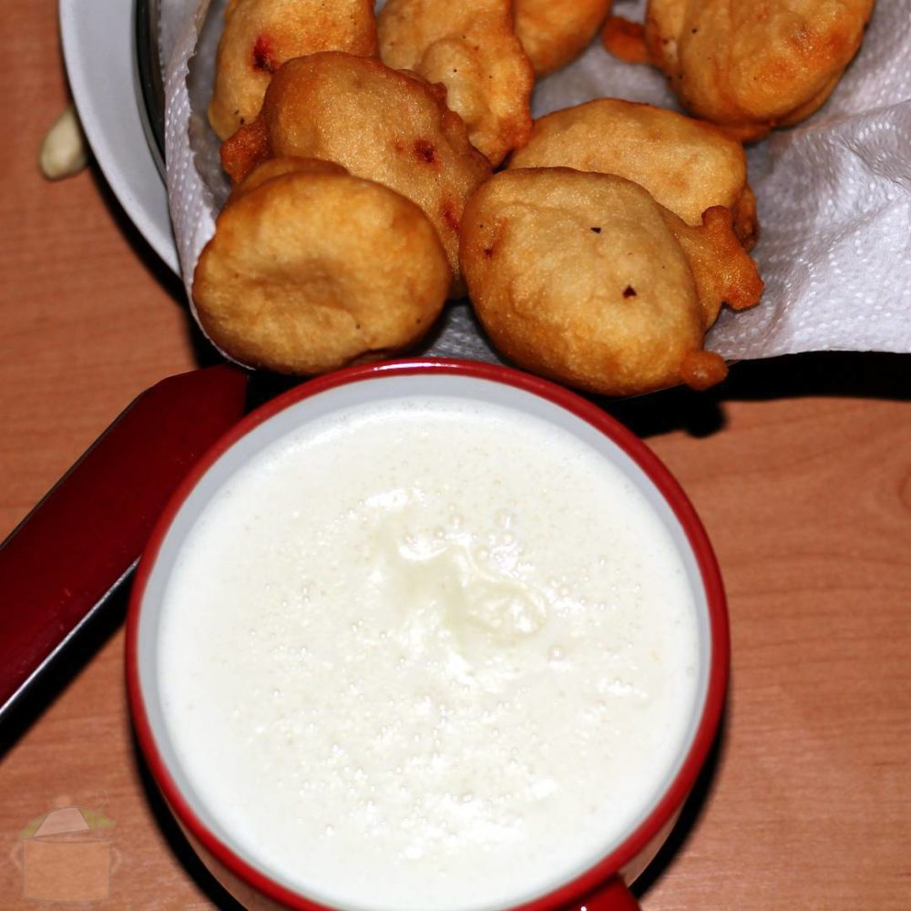
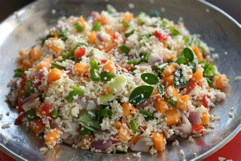
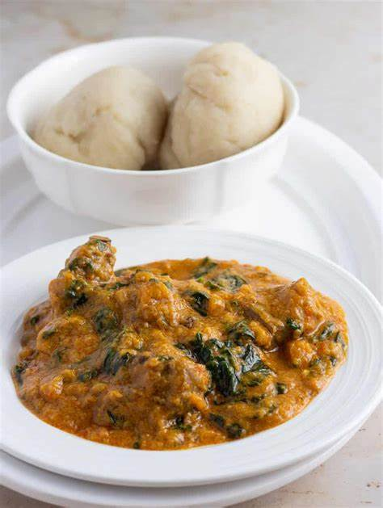

Welcome Bello
Based on the information you provided i.e non diabetic and wants to gain weight the following meal is being recomended for you today.
Breakfast
Kunu & Kosai
Kunu, a Nigerian beverage made from grains like millet or sorghum, offers carbohydrates, proteins, and essential vitamins and minerals like B vitamins and iron. Kosai, a popular street food, is made from ground black-eyed peas or cowpeas, providing plant-based protein, fiber, and key nutrients such as folate and potassium. Both kunu and kosai are nutritious options, adding variety and beneficial nutrients to the diet.
Lunch
Danbun Shinkafa
Dambun shinkafa is a traditional Nigerian dish made from rice flour formed into small balls, often served with a savory sauce. It's a staple food in Nigerian cuisine, particularly in the northern regions. Rich in carbohydrates, dambun shinkafa also provides some protein and essential nutrients found in rice. The dish is a filling and nutritious part of many Nigerian meals, offering energy and sustenance.
dinner
Tuwon Alkama & Miyar Taushe
Tuwon alkama miyar taushe is a traditional Nigerian dish consisting of mashed cooked millet or corn dough served with a savory pumpkin (taushe) soup. It's a staple in Hausa cuisine, particularly in the northern regions of Nigeria. The dish is rich in carbohydrates from the millet or corn, while the pumpkin soup adds vitamins, minerals, and flavor. Tuwon alkama miyar taushe is a hearty and nutritious meal, providing energy and essential nutrients for those who enjoy it.